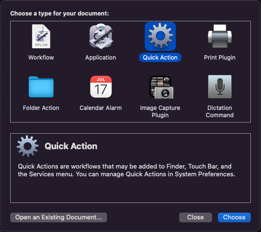
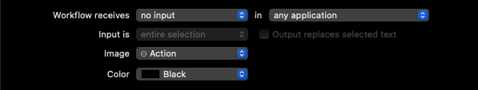
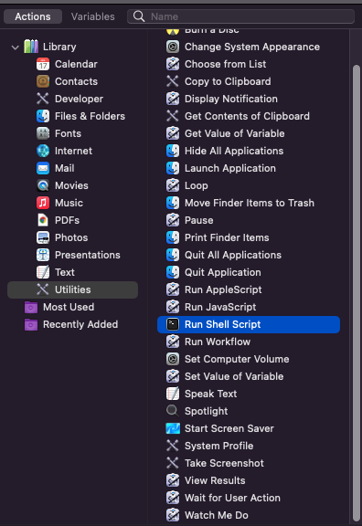
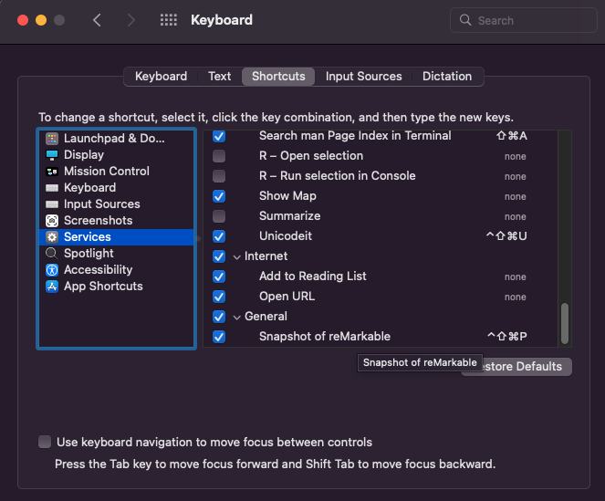

One everyday workflow that I wanted to optimize was quickly sketching
out a diagram on the reMarkable tablet and including it in a document I
was writing somewhere else.
My primary computer is a Mac. Here’s my solution:
Set up reSnap. This
step requires changes on both the reMarkable tablet and the local
machine. For the former, I followed the instructions in the README
file. For the latter, I only really needed to install FFmpeg and ImageMagick.
Create a Mac Quick Action to invoke reSnap.
Bind a hotkey that grabs the snapshot of the reMarkable display,
cleans it up, and sticks it in Mac’s clipboard.
Details instructions follow. I can now just hit ⌘+⌃+⇧+P to grab the
snapshot and then hit ⌘+V to paste it into whatever application I am
using, usually Google Docs.
Setting up reSnap
I have my fork of
reSnap, which adds a few valuable tricks like cleaning
up the image and placing it in the system clipboard. By default, the
upstream reSnap script attempts to preview the image using
feh (an image viewer I’ve never heard of). Immediately
viewing the picture wasn’t useful to me, so I made that optional. You
can grab my fork of reSnap here.
On the reMarkable tablet side, you must follow the instructions in
the README file to install lz4 and
head on the device.
It is important to set up SSH to use password-less logins since the
hotkey method relies on being able to connect without prompting for a
password. See instructions for setting
up SSH for passwordless login.
On the local machine – which in my case is a Mac – you can install
all the requirements using Homebrew as follows:
brew install ffmpeg imagemagick
Creating a Mac Quick Action
Start “Automator.”
Create a new “Quick Action.” 
Set up the workflow options to receive no input in any
application. All the other options are up to you, or you can leave them
as-is. 
Drag over the “Run Shell Script” action from the actions library.

Paste something like the following (with the suggested
modifications to suit your local environment).
Note that the reMarkable needs to be connected via a USB cable to
capture a snapshot using the above command. If you want to be able to
use WiFi you should use the --host option to specify either
the local hostname (usually “remarkable”) or the IP address. In all
cases the hotkey should only be expected to work when the reMarkable is
not sleeping.
If you’d like, you can also add a “Display Notification” action,
so you know when the script is done running. The FFMpeg
invocation may take a few seconds.
Try it out with the “Run” button.
Binding a hotkey
Once you save your quick action, you can bind a hotkey like this:
Open “System Preferences” and navigate to “Keyboard” ->
“Shortcuts”.
Click on “Services” and scroll to the bottom. You should see the
new quick action you just made listed under the “General” category. It
should have no keys assigned to it.

Example of what you should see when you
select “Services” in “Keyboard” -> “Shortcuts”
Double click on the “none” and type your hotkey.
That’s it.
Here’s what a snapshot looks like:
A snapshot from my reMarkable
tablet
A couple of notes on
the --sketch option
My fork of reSnap introduces a --sketch
option that cleans up the picture a little bit. It currently does the
following:
Erase the little menu widget from the top-left corner of the image.
Since reSnap grabs the image right off the framebuffer this
little artifact makes its way to the resulting image.
Erase a tiny little black dot that appears in the bottom-left corner
of the image. I don’t know where this one comes from, but it’s
there.
Make the background transparent.
Resample the image at 50% resolution with anti-aliasing. The
original image is a stiff monochrome image with a white background and
black strokes. The resampling after making the background transparent
makes the edges smoother and a bit easier on the eyes. Otherwise all the
edges look jagged.
Trim the image to remove all the empty borders thus making the image
size just large enough to hold the actual image.
All of this is done via an invocation of ImageMagick.